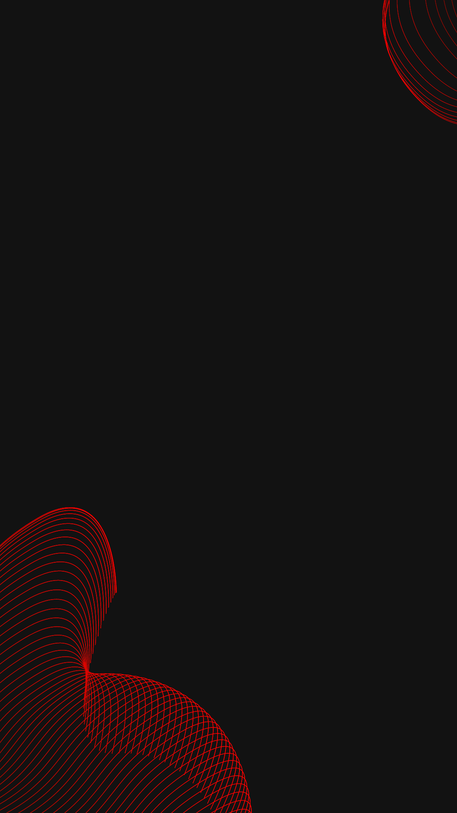

<ion-content>
  
  <div id="content">
    <ion-icon name="close-circle-outline"></ion-icon>
    <h1>Ops,</h1>
    <p>Seu token foi bloqueado.</p>
    <ion-button id="btnRetry" color="danger" (click)="verify()" expand="block" shape="round">
      <ion-spinner *ngIf="loader" ></ion-spinner>
      <h1 *ngIf="!loader" style="width: 100%; text-align: center; font-size: 1rem;margin: 0 !important; color: white;">tente novamente</h1>
    </ion-button>
    <ion-button id="btnAlternate" color="danger" (click)="change()" expand="block" fill="clear" shape="round">
      Trocar Empresa
    </ion-button>
  </div>
</ion-content>
